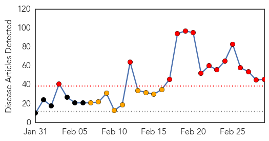
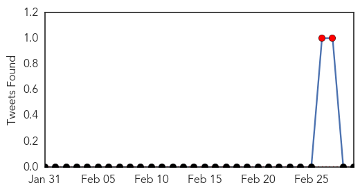
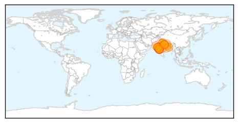

Measles
30-Day Web Trend
5 alerts, 6 warnings

30-Day Twitter Trend
0 alerts, 0 warnings

Article Locations

Article Confidences
Top Articles:
- 0.997
- The measles outbreak and vaccines
- 0.977
- Youngstown News, Unvaccinated U.S. travelers
- 0.976
- Snohomish County has close call with measles-infected visitor
- 0.976
- Sweden confirms measles case --China Economic Net
- 0.974
- Sweden confirms measles case
- 0.936
- Outcomes contradict vaccination opponents
- 0.931
- German toddler dies in measles outbreak
- 0.901
- Why are we still debating vaccines?
- 0.870
- Doubts over vaccine safety persist
- 0.853
- What Happens In Vegas Stays In Vegas, But What If It’s Measles?
- 0.850
- Many Central Coast schools vulnerable to measles outbreaks
- 0.841
- Dana Hills High School
- 0.823
- WBTV 3 News, Weather, Sports, and Traffic for Charlotte, NC
- 0.756
- Measles PSA urges vaccines
- 0.714
- Agencies work to increase childhood vaccination rates
- 0.713
- Vaccines Recommended to Protect Against Measles
- 0.614
- How's your school rank? A new look as state lists percentage of school measles exemptions -- Port Angeles Port Townsend Sequim Forks Jefferson County Clallam County Olympic Peninsula Daily NEWS
- 0.580
- Oregon reconsiders vaccine rules
- 0.565
- Oregon to Consider Banning Exemptions for Vaccines
- 0.523
- Victim of success? Data shows vaccine exemptions rising in region
Top Tweets:
-
No tweets found for Mar 01, 2015
Swine Flu
30-Day Web Trend
15 alerts, 9 warnings

30-Day Twitter Trend
3 alerts, 0 warnings

Article Locations
Article Confidences

Top Articles:
- 1.000
- 34 more fall prey to swine flu; death toll climbs to 1,075
- 1.000
- First swine flu death in Nepal
- 1.000
- 34 more fall prey to swine flu; toll climbs to 1,075
- 0.999
- Swine flu could spread to Pakistan: Ansar Burney
- 0.999
- Swine flu may spread to Pakistan
- 0.999
- Swine flu claims 36 more lives, toll rises to 1,040, over 19,000 affected
- 0.998
- Swine flu in Mumbai: Number of cases will rise drastically due to change in weather
- 0.998
- Swine influenza strengthening roots in Nepal
- 0.998
- Govt to Bear Entire Cost of Swine Flu Treatment: Maharashtra CM
- 0.998
- Salman Khan to undergo swine flu tests following Sonam's scare
- 0.998
- Maharashtra government to bear swine flu treatment cost: CM
- 0.996
- Swine flu death cases in India rising, Pakistan at risk
- 0.995
- Bengal hospitals refusing swine flu patients
- 0.995
- Maha govt to bear swine flu treatment cost: CM
- 0.994
- Flu shield missing, docs fear infection
- 0.993
- Two more die, 45 fresh swine flu cases in city
- 0.993
- Swine flu strikes Sonam Kapoor in Rajkot
- 0.993
- Contradicting reports on Sonam Kapoor's health
- 0.991
- The Indian Express
- 0.986
- Read Health News & Articles at TheHealthSite.com
- 0.986
- Sonam Kapoor tests positive for swine flu
- 0.967
- Cong leader in Ratlam dies of swine flu
- 0.962
- Swine flu claims one more life in WB, toll rises to eight
- 0.959
- Akhilesh Yadav asks media to refrain from creating panic about swine flu
- 0.941
- Bollywoods Sonam tests positive for swine flu
- 0.929
- Mumbai: Sudden rains can wreak havoc on your health
- 0.924
- Salman Khan to undergo tests for swine flu?
- 0.920
- Sonam Kapoor tests positive for swine flu
- 0.918
- Actress Sonam Kapoor tests positive for swine flu, flown to Mumbai
- 0.900
- Swine flu claims life in Kathmandu
- 0.898
- Sonam Kapoor returns to Mumbai for Swine flu treatment
- 0.894
- 'Sonam Kapoor suffering from cough and cold, not swine flu'
- 0.885
- 37 new swine flu cases put city tally at 505
- 0.847
- Sonam Kapoor Admitted In Mumbai Hospital
- 0.830
- Vohra reviews H1N1 with central team
- 0.815
- Sonam Kapoor tested positive for swine flu, treated at Rajkot hospital : Celebrities, News
- 0.788
- Sonam Kapoor Tests Positive For Swine Flu
- 0.780
- Sonam Kapoor tests positive for swine flu, admitted in Sterling Hospital
- 0.720
- Swine flu claims one more life in West Bengal, death toll rises to eight
- 0.662
- The Shillong Times
- 0.649
- Prem Ratan Dhan Payo: Lesser known facts
- 0.608
- Doctors on strike, hospitals hit
- 0.598
- Sonam Kapoor flown to Mumbai for swine flu treatment
- 0.575
- Actress Sonam Kapoor taken to Mumbai for swine flu treatment
- 0.554
- Sonam Kapoor taken to Mumbai for swine flu treatment
- 0.548
- Sonam Kapoor taken to Mumbai for swine flu treatment
Top Tweets:
-
No tweets found for Mar 01, 2015